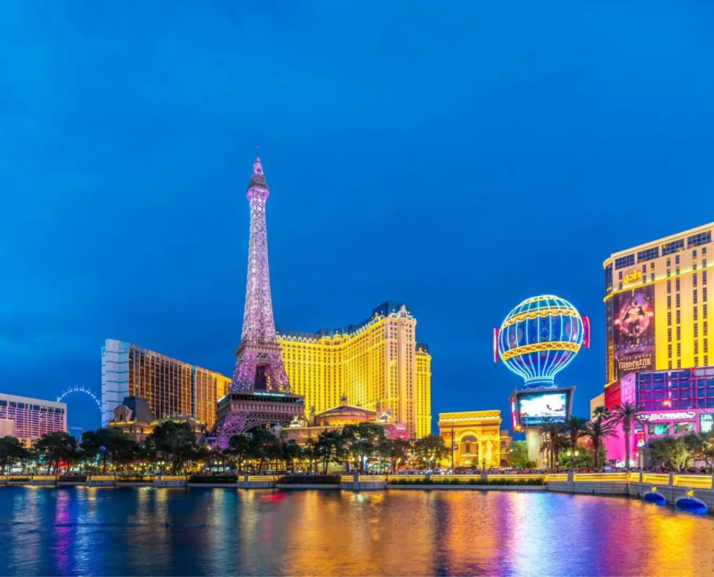

Một số kinh nghiệm khi mua vé thăm quan tháp Eiffel
Hàng năm số lượng khách du lịch đến với Paris khá lớn,
để tránh tình trạng bạn phải chờ đợi lâu khi mua vé bạn
nên tham khảo một số kinh nghiệm sau đây:
- Đặt mua vé online tại các website chính thức: ngày nay
bạn có thể tiến hành mua vé trực tuyến trên hệ thống
các trang web chính thức. Thời gian bán vé 24/24 các
bạn có thể dễ dàng mua vé ở mọi lúc mọi nơi.

- Mua vé trực tiếp: ngoài cách mua vé bằng hình thức online,
các bạn còn có thể trực tiếp mua vé thăm quan tại cổng ra vào.
Tuy nhiên hình thức mua vé này khiến bạn tốn khá nhiều thời gian,
có thể kéo dài từ 2 đến 3 giờ đồng hồ.
- Đặt mua vé qua một số đơn vị kinh doanh du lịch lữ hành:
hình thức mua vé này cũng được rất nhiều du khách lựa chọn
khi đến tháp Eiffel. Tuy nhiên cách thức mua này giá vé
thường cao hơn so với bình thường. Đôi khi bạn có thể gặp
tình trạng bị lừa đảo.